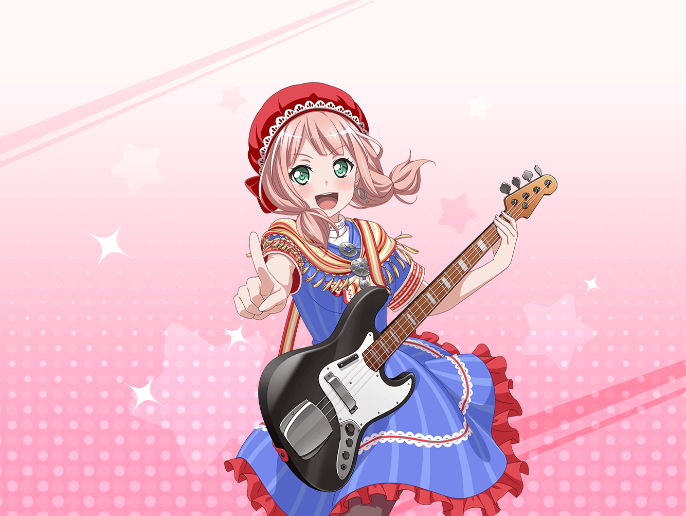

羽沢珈琲店
つぐみ
お待たせ、ひまりちゃん！ ご注文の紅茶、どうぞ！
ひまり
うーん、いい香り〜！ ありがとう、つぐ！
つぐみ
……あれ？ 携帯で写真を見てたの？
ひまり
うん、こないだのイヴちゃんパーティの写真だよ♪
ひまり
ハンネちゃん、すっごく綺麗だったよね〜！
つぐみ
うん。モデルさんみたいだったね
ひまり
髪の色が綺麗で、すっごく似合ってたよ〜。
私もあんなふうになれたらって憧れちゃうな〜
ひまり
……あ、そうだ！ いいこと思いついた！
つぐみ
どうしたの？
ひまり
私もハンネちゃんみたいな色の髪にする！
つぐみ
ええっ！？ そ、それって……どういうこと！？
ひまり
だから、髪の毛の色、変えちゃおっかな〜って言ったの！
ひまり
少しでもハンネちゃんみたいに素敵になりたいし！
つぐみ
で、でも、いきなり髪の色を変えたら、
みんなびっくりすると思うよ？
つぐみ
と、というか、ちょっとやりすぎなんじゃないかな……？
ひまり
そんなことないよ〜？ これくらい普通だってば！
ひまり
よーし、そうと決まったらさっそく美容院予約しよ〜っと！
つぐみ
ええっ！ ま、待って！
つぐみ
（こ、ここは私が止めなくちゃ！ でも、どうしよう……？）
つぐみ
ええと、き、聞いて、ひまりちゃん！
ひまり
ん？ うん、聞くけど……どうしたの？
つぐみ
そんなことしなくても、ひまりちゃんは素敵だと思うの！
ひまり
え？ す、素敵？
つぐみ
うん、ひまりちゃんは明るくて、とっても頼りになるし！
周りのみんなに気配りを忘れないし、すごいと思うよ！
ひまり
そ、そっかなぁ……？
ひまり
でも、そう言ってもらえるのはうれしいかも……！
つぐみ
ひまりちゃんにはたくさんいいところがあるんだから、
誰かを真似する必要なんて、ないんじゃないかな？
つぐみ
今のままのひまりちゃんが一番だよ、きっと！
ひまり
……ん〜、そっか、それもそうだね……うん！
ひまり
つぐの言う通り、自分らしく素敵になるのが一番だよね！
つぐみ
う、うん、そうだよ！
ひまり
ありがと！ やっぱり、髪の色を変えるのはやめる！
つぐみ
お、思いとどまってくれてよかった〜……
ひまり
え？ 何か言った？
つぐみ
う、ううん！ 何も言ってないよ！
ひまり
そう？ なら、いいけど
ひまり
よーし、じゃあ自分らしく、ケーキでも食べちゃおっかな〜！